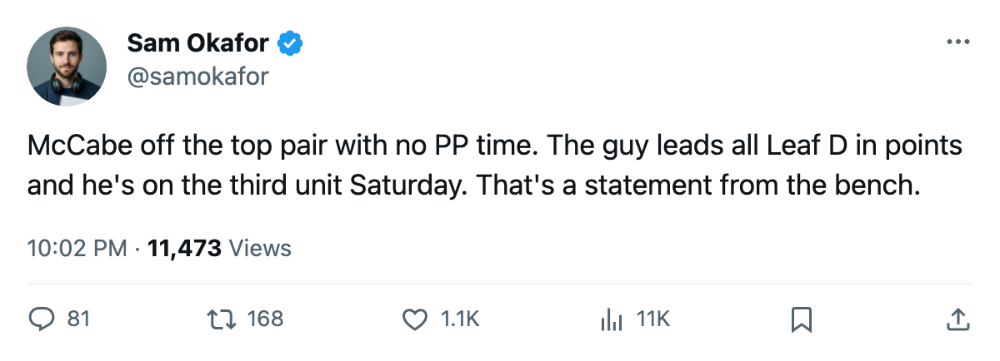

TOR
TORLeafs Practice Notes: McCabe dropped to the third pair, Klesla joins the power play
Kaberle takes the PP1 right side; the shuffle sets up Saturday's game at Buffalo, where Toronto leads the season series 3-0-0 with 24 goals for and 2 against
 Sam OkaforLeafs beat reporter · Queen City Telegram
Sam OkaforLeafs beat reporter · Queen City Telegram
The piece
The coaching staff moved  Bryan McCabe84 off the second pair and out of all power-play minutes ahead of Saturday's game at
Bryan McCabe84 off the second pair and out of all power-play minutes ahead of Saturday's game at  Buffalo Sabres. McCabe leads all Leaf defensemen with 55 points in 67 games, on 41 assists, 22.7 minutes a night. He now carries only the K2LD and L2RD slots, his lowest assignment of the season.
Buffalo Sabres. McCabe leads all Leaf defensemen with 55 points in 67 games, on 41 assists, 22.7 minutes a night. He now carries only the K2LD and L2RD slots, his lowest assignment of the season.
He held a second-pair spot (32RD, 41LD), the K2RD penalty-killing slot, the L1RD even-strength pairing, and the PP1LD role through the last edition. The coach stripped all four at once.
 Tomas Kaberle84 takes the PP1 right side (P1RD).
Tomas Kaberle84 takes the PP1 right side (P1RD).  Rostislav Klesla84 was added to the PP2 right side (P2RD). Steve Eminger77 lost his K1RD penalty-killing slot, leaving him with no special-teams assignment.
Rostislav Klesla84 was added to the PP2 right side (P2RD). Steve Eminger77 lost his K1RD penalty-killing slot, leaving him with no special-teams assignment.
The new power-play pairings are Jackman (P1LD) with Kaberle (P1RD) on PP1, and Fischer (P2LD) with Klesla (P2RD) on PP2.
McCabe's 55 points come on $3.00M with 4 contract years remaining. At 82 overall, he sits alongside Kaberle and Klesla at the same grade, and below Jackman at 84 and  Jiri Fischer85 at 83. That production argues for a bigger role, but the coach isn't giving him one.
Jiri Fischer85 at 83. That production argues for a bigger role, but the coach isn't giving him one.
Buffalo has scored 2 goals in 3 meetings this season
Buffalo Sabres sits 23-29-6 for 64 points, on a 1-game winning streak, 15-16 at home. The season series between these two reads 3-0-0 with 24 goals for Toronto and 2 against. Three meetings, 24-2.
Toronto has four games remaining against Buffalo this season, starting Saturday at HSBC. The road trip continues with  Vancouver Canucks at home on Tuesday, then
Vancouver Canucks at home on Tuesday, then  Edmonton Oilers and
Edmonton Oilers and  Calgary Flames the following week.
Calgary Flames the following week.
Toronto is 23-9 on the road this season, the second-best mark in the division behind Boston's 20-12 away record.
 Robert Dome68 left Toronto on 2005-03-04 and now plays for Calgary. He visits the Air Canada Centre on 2005-03-13.
Robert Dome68 left Toronto on 2005-03-04 and now plays for Calgary. He visits the Air Canada Centre on 2005-03-13.
